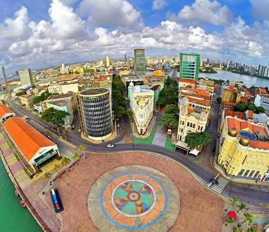

O Marco Zero é um dos pontos turísticos mais emblemáticos da cidade do Recife, localizado no centro histórico da cidade.
O Marco Zero é conhecido por ser o ponto de partida para a contagem das distâncias rodoviárias em Pernambuco e é um local de grande importância histórica e cultural. Além disso, é um ótimo lugar para apreciar a vista para o rio Capibaribe e observar as atrações culturais que frequentemente ocorrem na região.